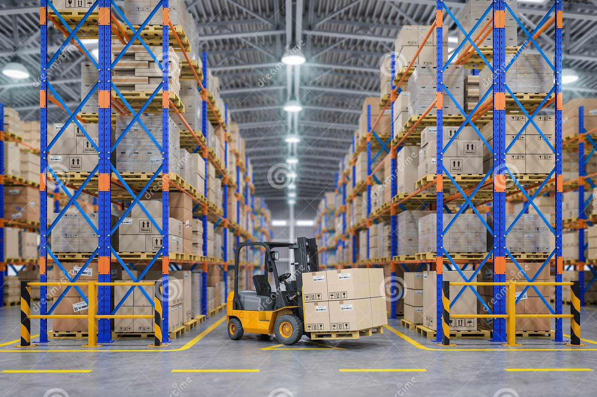
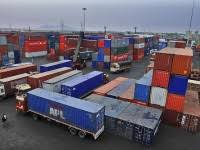
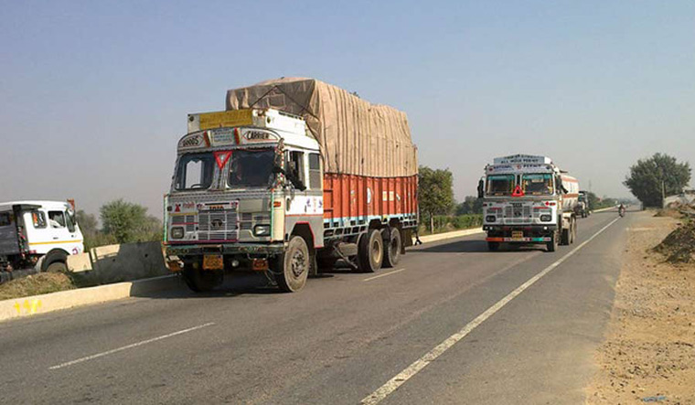
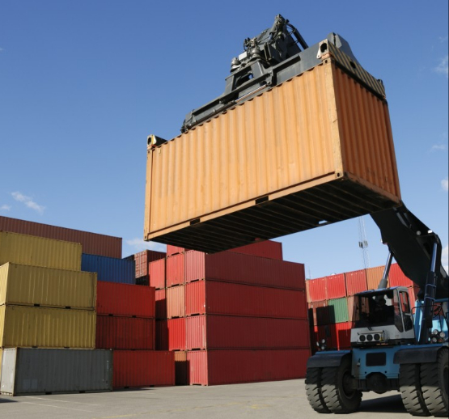

SEZ Warehousing

The concept of warehousing of goods in a duty-free area (SEZ) has emerged as a key factor in logistics and global supply chain system servicing.
Mundra has rapidly emerged as a leading international trading hub, owing to superior infrastructure and its strategic location –
cargo consolidation and distribution to the Indian sub continent, South East Asia, Middle East, CIS and Africa.
|
Container Freight Station

An approved Container Freight Station and a Bonded Warehouse, along with our other services help us provide Total Logistics Solutions to clients.
Today we are partnering with some of the largest players across industries - Heavy Machinery, Cosmetics, Paper, Bitumen, Oil, Timber to name a few.
Our systems driven approach ensures the highest level of services to ensure customer delight.
|
Transportation

Our company handles the local transportation of container and body trucks for export and import movement of our esteemed clients.
We are able to offer this kind of service to all parts of India through our network of esteemed agents and sub-agentsOur dedicated team
of supervisors and trained mechanics ensure a high uptime of our fleet.
|
Empty Container Yard

The largest and most efficiently run Empty Container Yard in Mundra SEZ.
A one of its kind technological interface ensures transparency of rates, on time performance and adherence to the highest quality standards.
With world class infrastructure, a large trained workforce and systems which support Location tracking, Barcoding and Real Times Updates for customers –
Empezar is the preferred partner for some of the largest shipping lines in the country.
|
Custom House Broker
We operate as Licensed Custom House Agents at all western ports of India. We are also present at various ICDs and CFS’ situated at all major locations.
We are capable of handling cargo consisting liquid, bulk, break bulk, project cargo & containerized cargo.
We have customs-approved trained & experienced staff to deal with customs port related matters and to provide excellent services.
|
Technology Solutions
Empezar has a large in-house technology team that has built a reputation for creating pathbreaking software solutions for the logistics Industry.
Our solutions have led up to a 50% increase in efficiencies for some clients.We are working with global shipping lines and reputed logistics players
to build systems that dramatically change the way they do business.
|